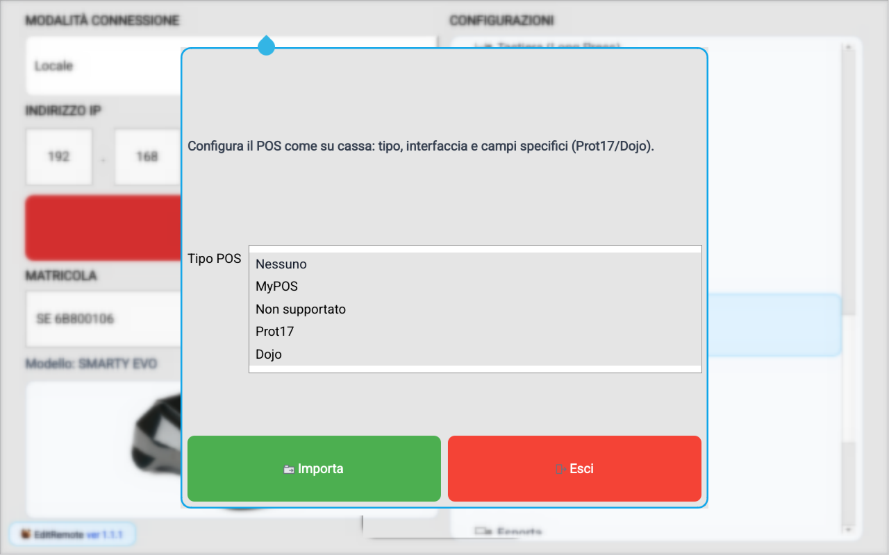
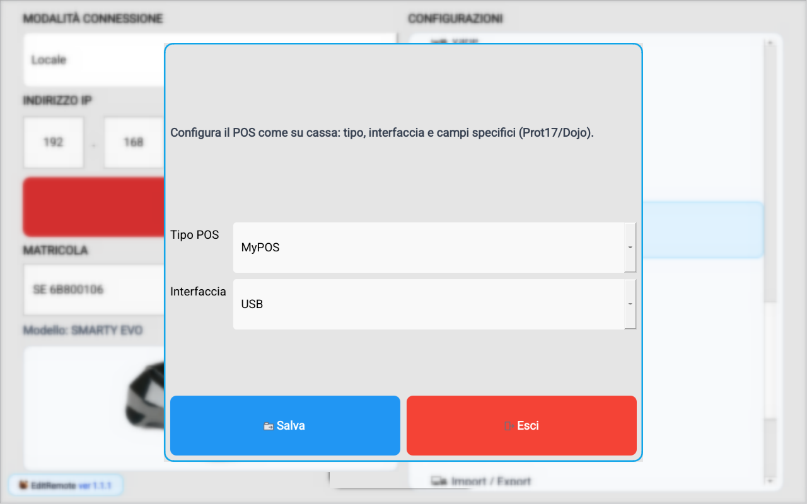
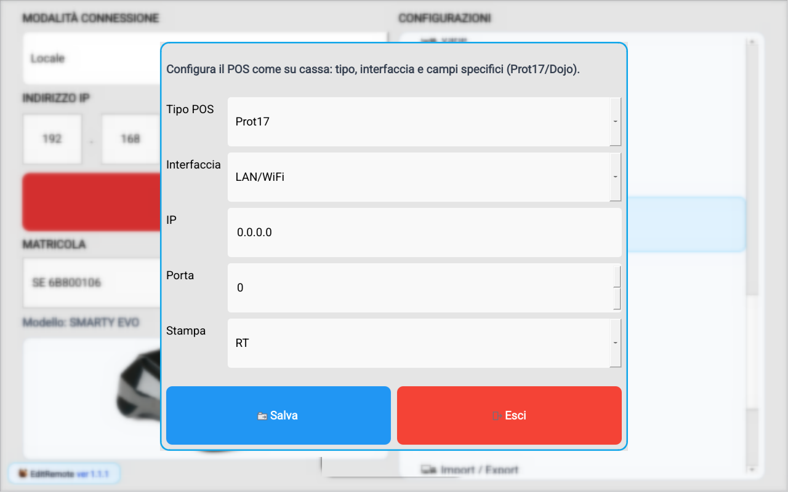
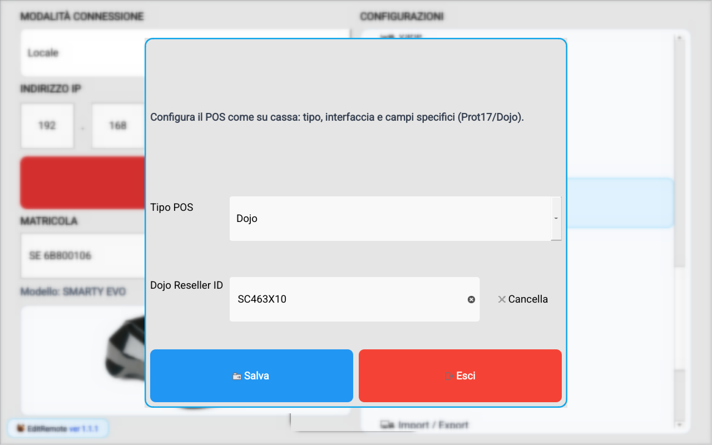
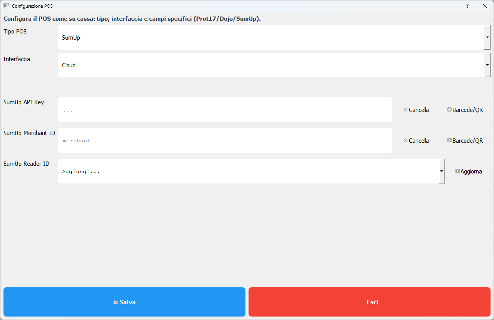

Config POS
Guida operativa
Questa programmazione equivale al comando 834 MENU sul registratore RT.
- Apri Config POS dalla lista Configurazioni.
- Importa i dati correnti dalla cassa.
- Seleziona il tipo POS corretto.
- Compila solo i parametri richiesti per quel tipo/interfaccia.
- Salva e verifica l'esito operativo con una prova pagamento.
Tipi POS disponibili
- NESSUNO: POS non collegato.
- NON SUPP.: POS non supportato (pagamenti gestiti in offline).
- MYPOS: integrazione myPOS.
- PROT.17: integrazione Protocol 17 (tipicamente Ingenico Desk/3200).
- DOJO: integrazione terminale Dojo.
Interfacce e parametri da inserire
- TIPO CONN.: USB, LAN/WiFi, SERIALE (MYPOS solo USB).
- INDIRIZZO IP: richiesto solo se interfaccia LAN/WiFi.
- PORTA TCP: richiesta solo se interfaccia LAN/WiFi.
- STAMPA: disponibile solo con POS tipo PROT.17 (RT, POS, POS+RT).
Cosa impostare per tipo POS
- MYPOS: imposta TIPO POS = MYPOS, connessione USB. Non servono IP/Porta in Config POS.
- PROT.17 / Ingenico: imposta TIPO POS = PROT.17, scegli interfaccia (USB/LAN/WiFi/SERIALE). Se LAN/WiFi inserisci IP e Porta TCP; configura anche STAMPA.
- DOJO: imposta TIPO POS = DOJO e completa la procedura guidata del terminale Dojo.
- NON SUPP.: da usare solo se il POS non e integrato; la cassa non esegue il flusso online POS.
Dettaglio campi PROT.17 (Ingenico)
- TIPO POS: seleziona PROT.17 per abilitare il protocollo ECR-POS compatibile Ingenico.
- TIPO CONN.: scegli il canale fisico tra USB, LAN/WiFi o SERIALE in base al cablaggio reale del terminale.
- INDIRIZZO IP: identifica il POS in rete locale; va compilato solo quando TIPO CONN. e LAN/WiFi.
- PORTA TCP: porta di ascolto del servizio ECR sul POS; deve coincidere con quella configurata sul terminale.
- STAMPA: definisce dove stampare la ricevuta POS: RT, POS o POS+RT.
In pratica: se il POS Ingenico e su rete, i campi critici sono IP e PORTA TCP; se e su USB/seriale, IP e PORTA non vengono usati e la parte principale da verificare e la modalità STAMPA.
Dettaglio configurazione DOJO
Quando selezioni TIPO POS = DOJO, il registratore avvia la procedura guidata di configurazione e richiede in sequenza i campi:
- API KEY (obbligatoria)
- RESELLER ID (obbligatorio)
- TERMINAL ID (selezionato automaticamente dalla lista terminali restituita dal servizio Dojo)
Se viene trovato un solo terminale, il Terminal ID viene impostato in automatico. Se i terminali sono multipli, la cassa mostra la scelta TERMINALE e salva l'ID selezionato. Per Dojo non vengono richiesti IP/Porta nella schermata Config POS.
Esito operativo e fallback offline (DOJO)
- In caso di errori di comunicazione (es. TLS o errore interno), viene proposto il fallback offline tramite richiesta CONTINUAOFFLINE?.
- Se l'operatore non conferma il fallback offline, viene segnalato POS NO OFFLINE.
- Errori tipici associati: ERRORE CONN. POS, OP. POS FALLITA, POS TIMEOUT, POS UTENTE CANC.
Collegamenti con la programmazione pagamenti
Dopo la configurazione POS , in menu della cassa - Pagamenti va abilitata l'opzione ABILITA POS per i metodi elettronici che devono dialogare con il terminale.
Riferimenti operativi dai manuali tecnici
- myPOS k300: selezione interfaccia all'avvio e profilo Cash Register per uso integrato con RT.
- Ingenico Desk/3200: protocollo 17, tipo linea, porta TCP/IP e messaggi di stato lato POS.
- Dojo: configurazione credenziali (API Key, Reseller ID) e selezione Terminal ID tramite procedura guidata.
- Messaggi errore frequenti in esercizio: POS TIMEOUT, POS TX ERROR, OP. POS FALLITA, POS NO CARD, POS DISCONNESSO.
Per scenario
Schermata Config POS

Schermata Config POS - MyPOS

Schermata Config POS - PROT.17

Schermata Config POS - Dojo

Schermata Pagamenti

Sottosezione SumUp
Per configurare SumUp apri Programmazione POS, seleziona Tipo POS = SumUp e compila i campi API Key, Merchant ID e Reader ID (con pulsante Aggiorna per la lista lettori quando disponibile).
Schermata Config POS - SumUp

Controlli finali consigliati
- Conferma su cassa dei valori programmati e del tipo POS selezionato.
- Prova una transazione per verificare dialogo RT-POS.
- Export XML di backup dopo la modifica.
- Se una voce non è disponibile, verifica modello RT e versione software del dispositivo.